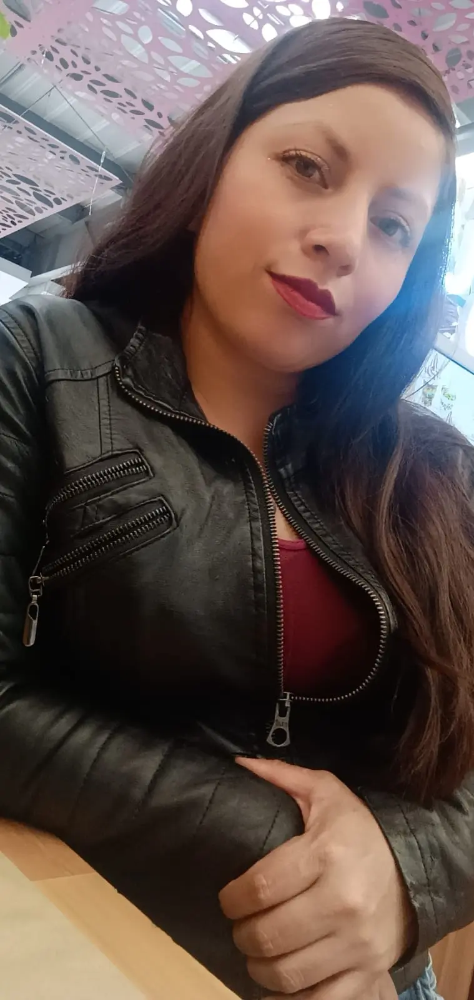

NUESTRO EQUIPO
Somos estudiantes de la Licenciatura en Educación Infantil, unidas por la vocación de educar y la intención de comprender la historia para transformar el futuro de la educación.
"Un saludo muy especial para todos. Mi nombre es Elsa Liliana Rodríguez Cortes, tengo 41 años y vivo en la ciudad de Bogotá. Actualmente, soy soltera y comparto mi tiempo entre mi trabajo como niñera y mis estudios, dos actividades que me permiten crecer cada día. Quiero expresar mi profunda gratitud por la oportunidad de pertenecer a este curso; me siento muy feliz de estar aquí y estoy lista para aprender y aportar lo mejor de mí."
"¡Hola a todos! Es un gusto saludarlos. Mi nombre es Lizeth Mariana Grimaldo Caviedes, tengo 19 años y vivo en el municipio de El Espinal, Tolima. Soy soltera y actualmente me dedico de tiempo completo a mis estudios, que son mi mayor prioridad. Me siento muy agradecida y motivada por formar parte de este curso, y espero que este proyecto sea de gran aprendizaje para todos nosotros."
"Un saludo cordial para todos. Mi nombre es Everly Jhoana Rojas Navarro, tengo 24 años y vivo en la ciudad de Bogotá. Actualmente vivo en unión libre y divido mi tiempo con mucho esfuerzo y dedicación entre mi trabajo en el sector de comidas rápidas, mis estudios y, lo más importante, el cuidado de mis hijos. Me siento muy agradecida de pertenecer a este curso y de compartir este espacio con ustedes, ya que es una oportunidad valiosa para mi crecimiento personal y el bienestar de mi familia."
"¡Hola! Un gusto saludarlos a todos. Mi nombre es María Giselle Peralta Méndez, tengo 23 años y vivo en el centro de Bogotá. Soy soltera y actualmente dedico la mayor parte de mi tiempo a mis estudios, que son mi principal prioridad. Me siento muy agradecida por la oportunidad de formar parte de este curso y tengo muchas ganas de aprender y compartir esta experiencia con todos ustedes."

"Un cordial saludo a todos. Mi nombre es Lizeth Yamil Aroca Tique, tengo 23 años y vivo en el centro de Bogotá. Soy soltera y actualmente dedico la mayor parte de mi tiempo a mis estudios, que son mi principal prioridad. Me siento muy agradecida por la oportunidad de formar parte de este curso y tengo muchas ganas de aprender y compartir esta experiencia con todos ustedes."